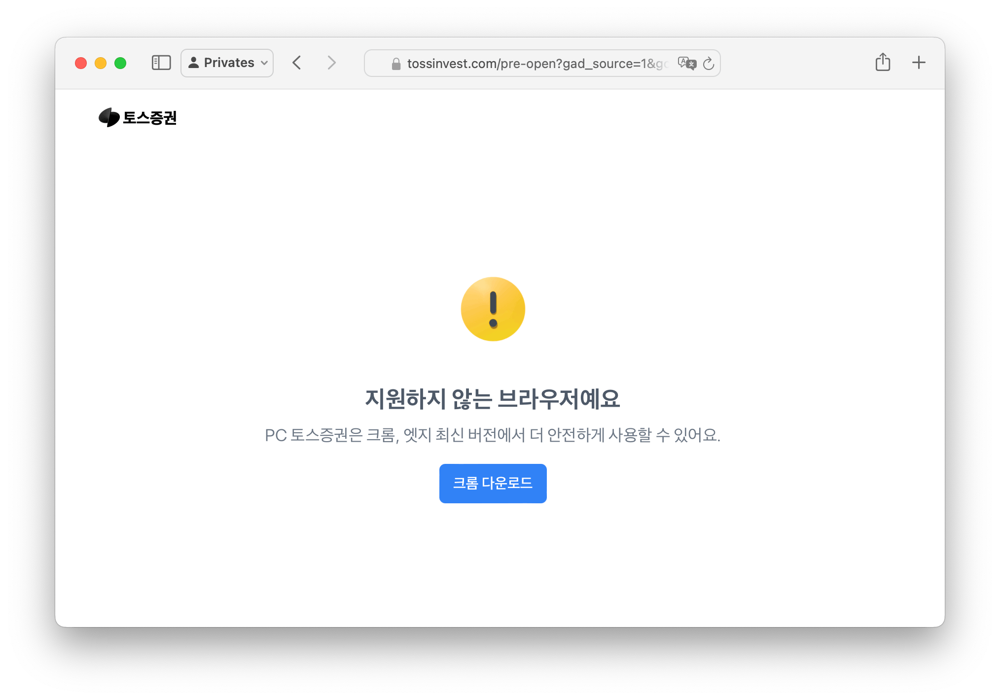

참으로 오랜만에 토스에 실망했다
경제
//
2024년 06월 17일 작성
//
2024년 12월 26일 업데이트

토스증권은 사파리를 지원하지 않는댄다. 허탈하다. 실망스럽다.
프라이버시를 제1의 가치로 내걸고 있는 애플의 행보를 생각해보면 토스 측의 대응은 좀 이해하기 어렵다. 가장 안전하게 사용하기 위해 크로미움 기반의 브라우저를 써야 한다라니 납득하기 어렵다. 크로미움에 얼마나 위험한 확장이 난립하고 있는지 생각해 보면 말도 안 되는 말이다.
오픈소스로 개발되는 브라우저라서 더 안전할 수도 있다는 말도 논리적으로 맞지는 않다. 애초에 애플의 사파리 브라우징 엔진인 웹킷(WebKit)도 오픈소스로 개발되고 있고 지금은 그저 사파리에서만 주로 사용되고 있다는 점이 다를 뿐이다. 거기다 사파리는 확장도 감시가 심한 편이라 위험한 확장은 사실상 없다고 봐도 된다.
그럼에도 토스증권은 어째서 사파리를 지원하지 않는 것일까?
개인적으로 생각하기엔 사파리의 느린 속도의 HTML5 지원이 문제지 않을까 싶기도 하다. 하지만 토스 모바일이 애초에 웹뷰 기반에서 동작하는 것을 보면 굳이 사파리에서 못 돌릴 스펙적인 이슈가 있을까 싶기는 하다. 물론 모바일 앱과는 다르긴 하니 분리해서 생각하는 게 맞을 거다.
무슨 사유가 있든 사파리를 배제한다면 그건 차별이다. 그리고 브라우저를 차별한다는 것은 토스 측의 명백한 잘못이고 명백한 실수다. 토스 측의 현명한 대처가 있기를 바랄 뿐이다.